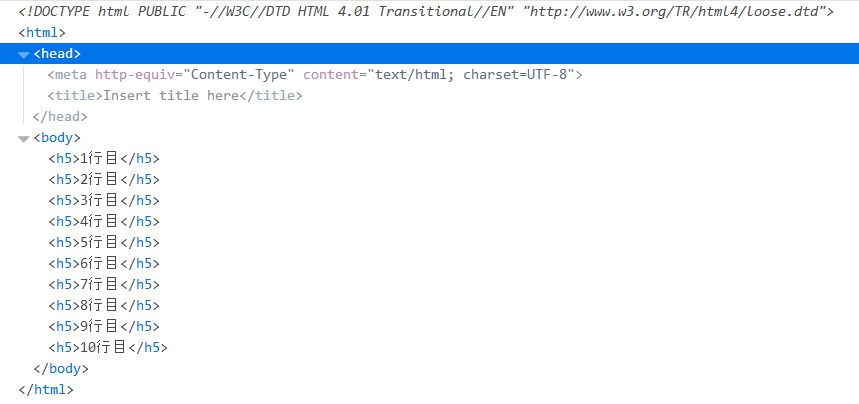
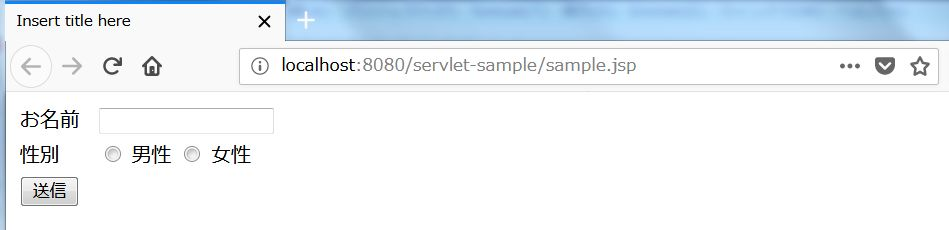
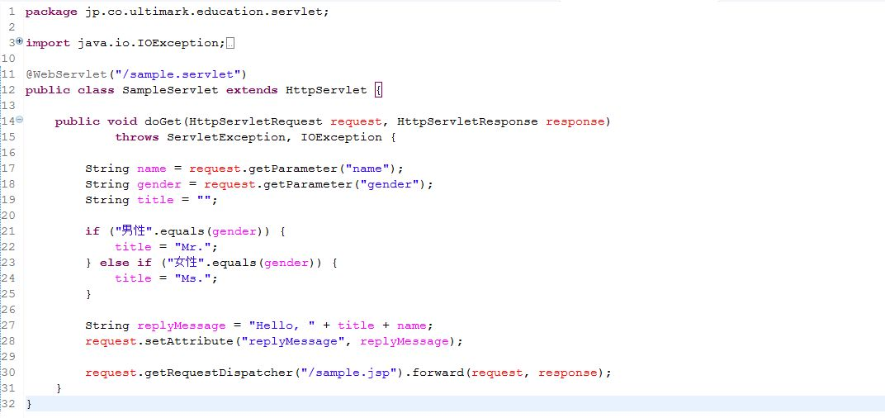

JSPからサーブレットへのデータ連携を考える場合、Webブラウザに表示されているJSPがどういう状態なのか理解している必要があります。誤解を恐れずに言うとWebブラウザに表示されているJSPは実は単なるHTMLです。実際に見てみましょう。JSPをWebブラウザに表示した状態が以下の図です。
前回の記事でお見せしたスクリプトレットのサンプルですね。ということは当然これはJavaのプログラムが埋め込まれたJSPファイルであるということになります。ではブラウザに付属している開発ツールで今表示されている画面のソースコードを確認してみましょう。ブラウザ上でF12を押下してみてください。
スクリプトレットも式もきれいさっぱり消えてしまっています。Webブラウザ自身はスクリプトレットも式も解釈できませんので当然と言えば当然なのですが、JSPからサーブレットへデータを連携する際は、Webブラウザに表示されている状態のJSPは単なるHTMLに過ぎないという認識を持つことが大事です。これはつまり、JSPからサーブレットへのデータ連携は”Javaプログラム的な”手法では実現できないということを意味しています。なぜなら、Webブラウザに表示されたJSPからはJavaプログラムが失われてしまっているからです。
Webブラウザに表示されている状態のJSPはもはや単なるHTMLファイルです。それ以外の何者でもありません。従って、JSPからサーブレットへのデータ連携は”HTML的な”手段によるほかありません。HTMLフォームの送信（サブミット）です。
HTMLフォームとはformタグに囲われたHTML上のコンポーネントのことです。action属性にURLを指定すると、そのURLがWebサーバーにリクエストされます。と同時にformタグの内側に記述されたinputタグが持っている値（より正確に言うとinputタグが持つvalue属性の値）がサーバーに送信されます。これをリクエストパラメータといいます。実際にサンプルを見てみましょう。sample.jspを以下のように修正します。
ブラウザに表示すると以下のようになります。
続いてSampleServletクラスを以下のように修正しました。
Tomcatを起動してhttp://localhost:8080/servlet-sample/sample.jspにアクセスし、以下の画面のように入力して送信ボタンをクリックしてみてください。
送信ボタン押下後に以下のような画面が表示されたでしょうか。
左側に表示されているのがリクエストパラメータ名、右側に表示されているのがリクエストパラメータ値です。リクエストパラメータはパラメータ名：パラメータ値のセットになっており以下の構文でパラメータ値を取り出すことができます。
request.getParameter(パラメータ名);
ではパラメータ名はどのように決定されているのでしょうか。よく見ると（よく見なくても）inputタグが持つname属性の値がそのままパラメータ名になっていることに気付くと思います。HTMLフォームではinputタグのname属性をパラメータ名にして、value属性の値がサーバーに送信されるということが理解できたと思います。HTMLフォームについてはこの後の記事で更に詳細に解説していきます。ここではJSPからサーブレットに値を連携するためにはリクエストパラメータを利用するということをおさえておいてください。
サーブレットはいわば特定のURLがリクエストされるまでアプリケーションサーバーで待機しているプログラムです。Webアプリの仕組みを思い出してください。サーブレットが直接Webクライアントにレスポンスを返すのではなく、あくまでもWebサーバーに対してレスポンスを返しているということでしたね。サーブレットからJSPへの連携はアプリケーションサーバー内で行われ、アプリケーションサーバーはJSPを解釈してHTMLを生成し、Webサーバーに返しています。従って、サーブレットからJSPへの連携は実は完全にJavaの実行環境の中での話なのです。要するにサーブレットからJSPへの連携には”Java的な”手法がとれるということです。
サーブレットからJSPへデータの連携を行う方法はいくつかありますが、ここではリクエスト属性（Request Attribute）を使った方法を解説していきます。他にもセッションを使った方法や極端な話、テキストファイルやデータベースを使っても連携は可能です。しかし、サーブレットからJSPにいくつかの値を連携したいだけなのにデータベースを持ち出すのも少々大げさですし、セッションは明らかに目的が違います。
request.setAttribute(キー, 値); // リクエスト属性への値の設定
request.getAttribute(キー); // リクエスト属性から値を取得
上記のコードがリクエスト属性に値を設定する書式になります。いずれもHttpServletRequestオブジェクトのメソッドです。サーブレットとJSPはいずれもHttpServletRequestオブジェクトにアクセスできますので、サーブレット側でrequest.setAttributeで値を設定し、JSP側でrequest.getAttributeを使って設定された値を取得するというのが基本的な使い方になります。request.getAttributeメソッドの戻り値はObject型ですので、リクエスト属性には数値や文字列だけでなくJavaオブジェクトを設定することもできます。具体的な使い方を見ていきましょう。SampleServletクラスを以下のように修正します。
またsample.jspは以下のように修正します。
それではTomcatを起動して実行してみましょう。
サーブレット側で設定したメッセージがJSPに反映されていることが確認できました。
JSPからサーブレット、あるいはサーブレットからJSPへのデータ連携を実装するにあたってはリクエストの生存期間（スコープ）を理解しておくことは重要です。一口にリクエストと言っても誰から誰へのリクエストなのか？ということを頭に入れておかないとアプリケーションが意図しない動きをしてしまうことがあります。例えば、先ほどの例ではWebブラウザでsample.jspにアクセスし、sample.jspでフォームをサブミットすることでSampleServletにアクセスしました。SampleServletはsample.jspにリクエストを転送しています（上記SampleServletの30行目）。これら一連のリクエストの流れを図にすると以下のようになります。
そして、これは非常に重要なことなのですが、これら一連のリクエストは全て別々のリクエストです。つまり、Webサーバーからsample.jspにリクエストされた時のHttpServletRequestオブジェクト、sample.jspでフォームをサブミットした際に生成される（＝SampleServlet#doGetメソッドの引数に渡される）HttpServletRequestオブジェクト、SampleServletからsample.jspにリクエストが送信された際に生成されるHttpServletRequestオブジェクトは全て別のオブジェクトであるということです。例えば、sample.jspを以下のように修正した場合、SampleServletへ値を引き継ぐことはできるでしょうか？
12行目にリクエスト属性の設定を追加しました。この状態でフォームをサブミットするとSampleServletにjava.util.Dateオブジェクトは連携されるでしょうか。無論試すまでもなく連携されません。スクリプトレットはJSPへのリクエストがあった際に評価され、その時点でスクリプトレットの中に記述されたJavaプログラムが実行されます。では、sample.jspににリクエストがあるタイミングとはいつでしょうか。上記の図で言うところの１と３です。sample.jspからSampleServletへのリクエストは２のリクエストですから、SampleServletではsample.jspで設定したリクエスト属性を取得することはできません。
にわかには理解しがたい内容も多かったと思いますが、リクエストのスコープをきちんと把握することはJavaに限らずWebアプリケーションを開発するエンジニアにとってとても重要なことです。自分で色々と試行錯誤しながら理解を深めてください。次回は入力フォームのある画面の開発を徹底的に攻略していきます。